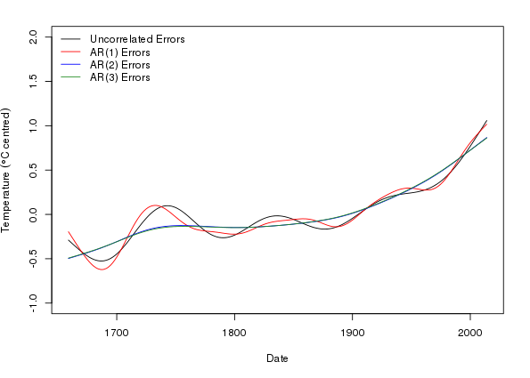

Modelling seasonal data with GAMs
Posted in
Tagged
Blogroll
In previous posts (here and here) I have looked at how generalized additive models (GAMs) can be used to model non-linear trends in time series data. At the time a number of readers commented that they were interested in modelling data that had more than just a trend component; how do you model data collected throughout the year over many years with a GAM? In this post I will show one way that I have found particularly useful in my research.
First an equation. If we think about a time series where observations were made on a number of occasions within any given year over a number of years, we may want to model the following features of the data
- any trend or long term change in the level of the time series, and
- any seasonal or within-year variation, and
- any variation or interaction in the trend and seasonal features of the data,
I’m not going to cover point 3 in this post, but it is a relatively simple extension to what I will discuss here. So, considering points 1 and 2 only, we need an equation that describes this model
\[ y = \beta_0 + f_{\mathrm{seasonal}}(x_1) + f_{\mathrm{trend}}(x_2) + \varepsilon, \quad \varepsilon \sim N(0, \sigma^2\mathbf{\Lambda}) \]
where \(\beta_0\) is the intercept, \(f_{\mathrm{seasonal}}\) and \(f_{\mathrm{trend}}\) are smooth functions for the seasonal and trend features we’re interested in, and \(x_1\) and \(x_2\) are to covariate data providing some form of time indicators for the within-year and between year times. We can knock off the distributional assumptions and the intercept and this would be very close to the formula we need to stick into a call to gam() from the mgcv package. In pseudo code we’d have something like
> mod <- gam(y ~ s(x1) + s(x2), data = foo)Before we can begin modelling though, we need to identify the data we’ll use for \(x_1\) and \(x_2\). I tend to use the date of observation converted to a numeric variable for my between year data, \(x_2\), if the observation dates can easily be represented in R’s Date class. This class counts the number of days from an epoch, Jan 1st, 1970, with negative values indicating days before this date. Seeing as we’ll probably need a nicely formatted axis for any plots we do and it is easy to convert the Date object into a numeric (integer), this will do nicely. One thing to point out is that the numeric representation can get into some large values which might affect the stability of the model fitting; in such cases you can just divide this number by 100 or 1000 or some such value as this time value is only used to indicate relative position in time of the observations.
For the within-year or seasonal time variable you could use the month of observation as a decimal value, which is particularly useful if you only have monthly or less frequent data. For more frequent observations I use the day of the year as my time variable. This information is also easily derived from a Date variable using the "%j" date format.
Data preparation
Having identified what data we’ll use, we can get to some analysis. In this post I’m going to use data from the Central England Temperature (CET) time series, one of the longest such records available. The CET data are available for daily observations, and the methods I describe here will certainly handle such data, but to save computing time and memory (you’ll need quite a big chunk of RAM to fit a gamm() to the daily series) I’m just going to use the monthly data series.
The CET data are available from the UK Met Office website and do require a little massaging to get them into a format appropriate for our use
> CET <- url("http://www.metoffice.gov.uk/hadobs/hadcet/cetml1659on.dat")
> writeLines(readLines(CET, n = 10))MONTHLY MEAN CENTRAL ENGLAND TEMPERATURE (DEGREES C)
1659-1973 MANLEY (Q.J.R.METEOROL.SOC., 1974)
1974ON PARKER ET AL. (INT.J.CLIM., 1992)
PARKER AND HORTON (INT.J.CLIM., 2005)
JAN FEB MAR APR MAY JUN JUL AUG SEP OCT NOV DEC YEAR
1659 3.0 4.0 6.0 7.0 11.0 13.0 16.0 16.0 13.0 10.0 5.0 2.0 8.83
1660 0.0 4.0 6.0 9.0 11.0 14.0 15.0 16.0 13.0 10.0 6.0 5.0 9.08
1661 5.0 5.0 6.0 8.0 11.0 14.0 15.0 15.0 13.0 11.0 8.0 6.0 9.75
There are 6 lines of header info and then the data are in a matrix with rows representing the year and the columns the months, with one extra column containing the derived annual mean temperature. Missing values are also indicated by either a -99.99 or -99.9, which we’ll need to take account of. To read the data in and partly process it I use
> cet <- read.table(CET, sep = "", skip = 6, header = TRUE,
+ fill = TRUE, na.string = c(-99.99, -99.9))
> names(cet) <- c(month.abb, "Annual")
> ## remove last row of incomplete data
> cet <- cet[-nrow(cet), ]
> ## get rid of the annual too - store for plotting
> rn <- as.numeric(rownames(cet))
> Years <- rn[1]:rn[length(rn)]
> annCET <- data.frame(Temperature = cet[, ncol(cet)],
+ Year = Years)
> cet <- cet[, -ncol(cet)]I used fill = TRUE because the final row of the file contains values for the current year, which may be incomplete. I throw this year of data away as it makes the processing easier later but that’s me just being lazy! What I end up with at this point is a data frame looking like this
Jan Feb Mar Apr May Jun Jul Aug Sep Oct Nov Dec
1659 3 4 6 7 11 13 16 16 13 10 5 2
1660 0 4 6 9 11 14 15 16 13 10 6 5
1661 5 5 6 8 11 14 15 15 13 11 8 6
1662 5 6 6 8 11 15 15 15 13 11 6 3
1663 1 1 5 7 10 14 15 15 13 10 7 5
1664 4 5 5 8 11 15 16 16 13 9 6 4
For use in gam() we need the data in long format, with variables for the temperature, and the two time variables. We also need to create some dates. As these are monthly data, I fake a day by setting it to the 15th of the month.
> ## stack the data
> cet <- stack(cet)[,2:1]
> names(cet) <- c("Month","Temperature")
> ## add in Year and nMonth for numeric month and a proper Date class
> cet <- transform(cet, Year = (Year <- rep(Years, times = 12)),
+ nMonth = rep(1:12, each = length(Years)),
+ Date = as.Date(paste(Year, Month, "15", sep = "-"),
+ format = "%Y-%b-%d"))
> ## sort into temporal order
> cet <- cet[with(cet, order(Date)), ]
>
> ## Add in a Time variable
> cet <- transform(cet, Time = as.numeric(Date) / 1000)The first line stacks the columns of the data frame creating a 2-column data frame containing the month identifier and the temperature data respectively. After adding some names to the data frame, I add
- a
Yearvariable by repeating the rownames of thecetdata frame 12 times, once per month, - a numeric month variable
nMonthby repeating the values1:12as many times as there are years in the data set, which will be used for the within-year or seasonal variable, and - a
Datevariable concocted from theYearandMonthdata.
The code is a bit tricky as I create a local Year variable whilst assigning the Year variable of the transformed cet data frame (spot the assignment in the first line of the call to transform()).
Next I make sure the data are in the correct temporal order; this is useful for plotting only. Finally, a Time variable is created which we’ll use for the trend or between-year variable; I scale by 1000 as discussed above. Once this is done, the data look like this
> head(cet)
> str(cet) Month Temperature Year nMonth Date Time
1 Jan 3 1659 1 1659-01-15 -113.6
356 Feb 4 1659 2 1659-02-15 -113.5
711 Mar 6 1659 3 1659-03-15 -113.5
1066 Apr 7 1659 4 1659-04-15 -113.5
1421 May 11 1659 5 1659-05-15 -113.5
1776 Jun 13 1659 6 1659-06-15 -113.4
'data.frame': 4260 obs. of 6 variables:
$ Month : Factor w/ 12 levels "Apr","Aug","Dec",..: 5 4 8 1 9 7 6 2 12 11 ...
$ Temperature: num 3 4 6 7 11 13 16 16 13 10 ...
$ Year : int 1659 1659 1659 1659 1659 1659 1659 1659 1659 1659 ...
$ nMonth : int 1 2 3 4 5 6 7 8 9 10 ...
$ Date : Date, format: "1659-01-15" "1659-02-15" ...
$ Time : num -114 -114 -114 -113 -113 ...
and we are good to go. First though, the obligatory time series plot (of the annual data only)
> ylab <- expression(Temperature ~ (degree*C))
> plot(Temperature ~ Year, data = annCET, type = "l",
+ ylab = ylab, main = "CET")If you plot the full data, you get a mess1 — try it if you want
> plot(Temperature ~ Date, data = cet, type = "l",
+ ylab = ylab)There looks to be some trend in the data and we expect seasonal variation in temperature, as despite plenty of evidence to the contrary, the UK does have a summer and it can snow there from time to time.
Extracting individual model terms
The fitted GAM model object contains a lot of information that can be used to interrogate the model. For the purposes of this post I’m interested in the trend terms, so I can extract information about the contributions to the fitted values of our chosen model by getting mgcv to spit out this information using predict() and type = "terms". In the code below, I do this for each of the four models we’ve fitted, predicting for 200 evenly-spaced values over the range of the date. Note want picks out the 200 values from the observed data as these are evenly spaced. For more complex data you may need to be a bit more clever about how you choose these values.
> want <- seq(1, nrow(cet), length.out = 200)
> pdat <- with(cet,
+ data.frame(Time = Time[want], Date = Date[want],
+ nMonth = nMonth[want]))
>
> ## predict trend contributions
> p <- predict(m$gam, newdata = pdat, type = "terms", se.fit = TRUE)
> p1 <- predict(m1$gam, newdata = pdat, type = "terms", se.fit = TRUE)
> p2 <- predict(m2$gam, newdata = pdat, type = "terms", se.fit = TRUE)
> p3 <- predict(m3$gam, newdata = pdat, type = "terms", se.fit = TRUE)
>
> ## combine with the predictions data, including fitted and SEs
> pdat <- transform(pdat,
+ p = p$fit[,2], se = p$se.fit[,2],
+ p1 = p1$fit[,2], se1 = p1$se.fit[,2],
+ p2 = p2$fit[,2], se2 = p2$se.fit[,2],
+ p3 = p3$fit[,2], se3 = p3$se.fit[,2])Note that it doesn’t matter what months get select in the 200 values as the month effect is handle by the other spline term; here we get the contribution for the trend which is based on the Time variable only. This would need to done be differently if you allowed the seasonal and trend splines to interact; I’ll look at this is a future post at some point.
Now I am ready to plot the estimated trends for the four models fitted
> op <- par(mar = c(5,4,2,2) + 0.1)
> ylim <- with(pdat, range(p, p1, p2, p3))
> ylim[1] <- floor(ylim[1])
> ylim[2] <- ceiling(ylim[2])
> ylab <- expression(Temperature ~ (degree*C ~ centred))
> plot(Temperature - mean(Temperature) ~ Date, data = cet, type = "n",
+ ylab = ylab, ylim = ylim)
> lines(p ~ Date, data = pdat, col = "black")
> lines(p1 ~ Date, data = pdat, col = "red")
> lines(p2 ~ Date, data = pdat, col = "blue")
> lines(p3 ~ Date, data = pdat, col = "forestgreen", lwd = 1)
> legend("topleft",
+ legend = c("Uncorrelated Errors", paste0("AR(", 1:3, ") Errors")),
+ bty = "n", col = c("black","red","blue","forestgreen"),
+ lty = 1, lwd = c(1,1,1))
> par(op)
This plot nicely illustrates the reduction in wiggliness of the estimated trend in the AR(2) and AR(3) models, and how similar the two higher-order AR models are in terms of their trend estimates.
I’ll leave things at this point; in the next post I’ll look at how we can look at where the estimated trend is changing in a statistically significant fashion by interrogating the fitted GAM in deeper and more devious ways.
Disclaimer
Don’t over interpret the model fits here; they were done to illustrate how to get mgcv to fit models to seasonal data. If you were doing this in anger for a real analysis then we’d want to look in a lot more detail at unmodelled features such as changes in the seasonal temperature with the trend and do a lot more in terms of model diagnostics. Such things are beyond the scope of this particular post, but I will pick some of these issues up in later postings as time permits.
Note also that the precision with which the data are reported early on in the series is less than that for more recent decades. This potentially might affect the variance of the series; the data might seem less variable earlier on because they are not recorded to the same level of precision as later values. We could investigate this and also other peculiarities of this particular data set and how it was collated by going back to the references cited in the raw data file and adjusting the model to account for any idiosyncrasies.
Footnotes
It’s not a mess really; the problem is that there are so many years of data that the years are all squished up tight and, coupled with the magnitude of the seasonal variation, this leads to an irregular black band obscuring everything unless you have a very wide graphics device.↩︎
Social